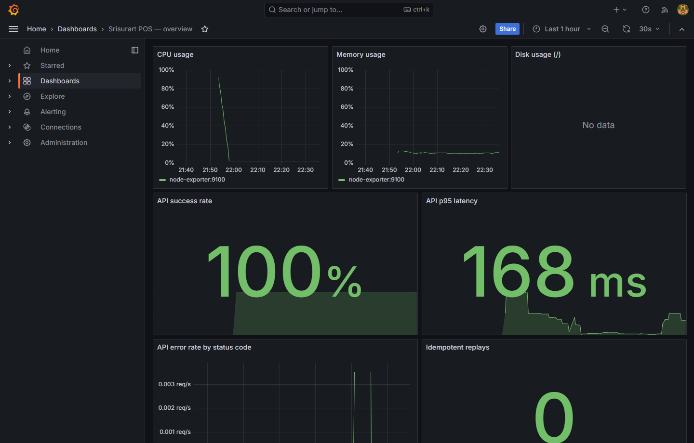
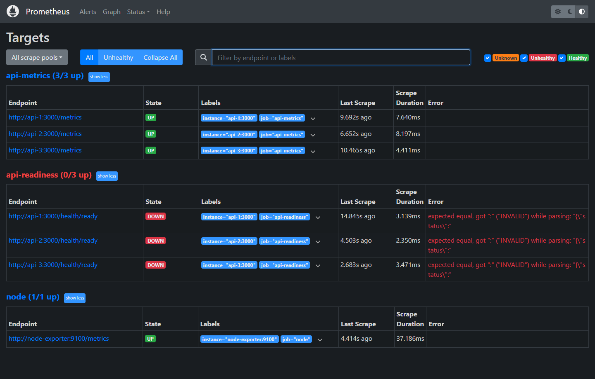
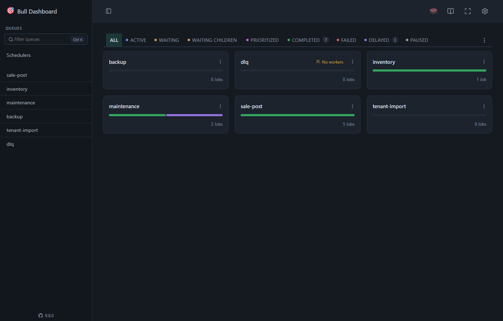

อ่านสุขภาพระบบจาก 3 หน้า: Grafana (ภาพรวม), Prometheus (แหล่งตัวเลข/เป้าที่เก็บข้อมูล), Bull-Board (คิวงานเบื้องหลัง) — และรู้ว่า "ปกติ" หน้าตาเป็นอย่างไร
127.0.0.1 — บน VM ต้องใช้ SSH tunnel (ssh -L 3000:127.0.0.1:3000, 9090, 3100)GRAFANA_ADMIN_USER/GRAFANA_ADMIN_PASSWORD · Bull-Board: BULL_BOARD_USER/BULL_BOARD_PASSWORD · Prometheus: ไม่มีรหัส (จึงห้ามเปิดออกนอก loopback)เปิด http://127.0.0.1:3000 → เข้าสู่ระบบ → แดชบอร์ด Srisurart POS — overview (ตั้งค่าไว้ให้อัตโนมัติ ไม่ต้องเพิ่ม datasource) · รีเฟรชทุก 30 วินาที ช่วงเริ่มต้น 6 ชั่วโมงล่าสุด

| แผง | บอกอะไร | ปกติ |
|---|---|---|
| CPU usage | CPU ของเครื่อง (node-exporter) | ไม่ค้างสูงต่อเนื่อง |
| Memory usage | RAM ที่ใช้ของเครื่อง | ต่ำกว่างบ ~4.2 จาก 6 GB |
| Disk usage (/) | พื้นที่ดิสก์ root | มีที่เหลือพอ — บน Docker Desktop จะว่าง (ดิสก์ของ WSL VM) ไม่ใช่บั๊ก |
| API success rate | สัดส่วนคำขอที่ไม่ใช่ 5xx | ใกล้ 100% (ไม่นับ /metrics และ /health/*) |
| API p95 latency | เวลาตอบ percentile ที่ 95 | คงที่ ไม่พุ่ง |
| API error rate by status code | อัตรา 4xx/5xx แยกตามรหัส | 4xx ประปราย (เช่น 409 สต็อกไม่พอ) ได้ · 5xx ควรเป็น 0 |
| Idempotent replays | จำนวนครั้งที่คำขอซ้ำถูกตอบด้วยผลเดิม (กันขายซ้ำ) | มีบ้างเมื่อเน็ตช้า — ไม่ใช่ข้อผิดพลาด |
| k6: … (5 แผง) | ผลทดสอบโหลดแบบกระจาย 3 เครื่อง | "No data" คือปกติ — ยังไม่เคยรัน (#380) · แผง 429 ต้องเป็น 0 เมื่อรันจริง |
http_requests_total, http_request_duration_seconds และ pos_idempotency_replay_total — เปลี่ยนชื่อ metric ในโค้ดแล้วแผงจะว่างเงียบ ๆเปิด http://127.0.0.1:9090/targets — เก็บข้อมูลทุก 15 วินาที เก็บย้อนหลัง 7 วันหรือ 2 GB แล้วแต่ถึงก่อน

| Job | เก็บจาก | สถานะที่ถูกต้อง |
|---|---|---|
node | node-exporter:9100 | UP — ป้อนแผง CPU/Memory/Disk |
api-metrics | /metrics ของ api-1..3:3000 (ภายในเท่านั้น) | UP ทั้ง 3 — ป้อนแผง API ทั้งหมด |
api-readiness | /health/ready ของ api-1..3 | DOWN — ปกติ! endpoint ตอบ JSON ซึ่ง Prometheus อ่านไม่ได้ (เก็บไว้เป็นตัวยึดตำแหน่ง) |
node และ api-metrics ครบ 3 ตัวเป็น UPถ้า api-N ของ api-metrics DOWN = instance นั้นมีปัญหา → ดู docker compose logs api-N/graphพิมพ์ up → Execute1 = เก็บได้ · 0 = เก็บไม่ได้Prometheus ยังรับข้อมูล k6 แบบ remote-write ผ่าน Nginx ที่ /prometheus-remote-write/api/v1/write (กัน IP + Basic Auth) — ใช้ตอนทดสอบโหลดเท่านั้น · ไม่มี rule_files ไม่มี alert
เปิด http://127.0.0.1:3100 (Basic Auth) — แสดง 6 คิว: 5 คิวมี worker ของตัวเอง (ไม่แย่งงานกัน) ส่วน dlq ไม่มี worker

| คิว | ใครใส่งาน | ทำอะไร |
|---|---|---|
sale-post | หลังขาย/คืนสำเร็จ | งานเบื้องหลังหลังขาย ไม่บล็อกการตอบลูกค้า |
inventory | ต่อจาก sale-post | ตรวจสต็อก (inventory.check) |
maintenance | ตั้งเวลาทุกชั่วโมง (idem-cleanup-global) + งาน purge | ล้าง idempotency key หมดอายุ, ใบเสนอราคาเก่า, ไฟล์ export เก่า |
backup | POST /backup/export | ส่งออกข้อมูลร้าน (tenant.export) |
tenant-import | POST /platform/tenants/:id/import | นำเข้าข้อมูลร้านใหม่ (tenant.import) |
dlq | งานที่ลองครบ 3 ครั้งแล้วยังล้ม | ที่พักงานเสียให้คนดู — "No workers" เป็นเรื่องปกติ ไม่มีใครประมวลผลอัตโนมัติ |
tenant-import ล้มเพราะร้านมีบิลอยู่แล้ว หรือไฟล์ผิดรูปแบบdlqอ่าน บันทึกสาเหตุ และตัดสินใจร่วมกับทีม — ไม่มี worker มาหยิบไปทำเอง/health/ready ตอบ 200 และทุกคอนเทนเนอร์ (healthy)node + api-metrics ×3 เป็น UP (api-readiness DOWN ได้)dlq ว่าง| เห็น | ทำ |
|---|---|
| success rate ตก / 5xx ขึ้น | ดูแผง error by status code ว่ารหัสอะไร → docker compose logs api-1 (…2, 3) → ตรวจ /health/ready ว่า Postgres/Redis ตัวไหนล้ม |
| p95 พุ่ง | ดู CPU/Memory · มีงานหนักในคิวไหม · ธุรกรรมที่นานเกิน 25 วินาทีจะถูก rollback เอง |
| 4xx 429 เยอะ | มีเครื่องยิงถี่เกิน rate limit (30 r/s ต่อ IP) — ร้านหลัง NAT เดียวกันแชร์ bucket เดียว |
| Memory ใกล้ 6 GB | ดูคอนเทนเนอร์ที่กินเกินงบด้วย docker stats — ห้ามเพิ่มบริการใหม่บน VM นี้ |
| Disk ใกล้เต็ม | ตรวจ /opt/pos/backups และ log · ห้ามลบ volume |
| Idempotent replays พุ่ง | เครื่องหน้าร้านลองส่งซ้ำบ่อย = เน็ตร้านไม่เสถียร — ระบบกันขายซ้ำให้แล้ว |
| FAILED ใน Bull-Board | ตามหัวข้อ 3 |
mob04 (ยัง deploy ไม่สำเร็จ) — ทุกอย่างในภาคนี้ดูได้บนเครื่อง dev